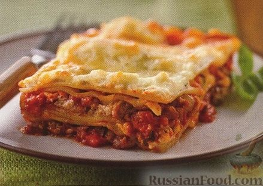

Lasagna
Домашняя страница

Лазанья по-итальянски
«Ингредиенты» :
Листы лазанья - 8 шт.
Фарш говяжий постный - 450 г
Соус томатный - 425 г
Помидоры консервированные, в собственном соку - 400 г
Сыр Рикотта - 425 г
Сыр Моцарелла - 225 г
Сыр Пармезан тертый - 0,5 стакана
Лук репчатый - 1 шт.
Чеснок - 1 зубок
Петрушка (зелень) - 0,5 пучка
Базилик (зелень) - 1-2 шт.
Орегано (зелень) - 1-2 шт.
Сахар - 1 ч. ложка
Как приготовить итальянскую лазанью:
- Лук и чеснок мелко нарезать. Зелень нарезать. Моцареллу натереть.
- В сковороде на среднем огне, все время помешивая, обжарить мясной фарш, лук и чеснок (8-10 минут).
- Добавить 2 ст. ложки рубленой петрушки, базилик, сахар, томатный соус, консервированные помидоры (размять помидоры вилкой). Помешивая, довести до кипения. Убавить огонь, готовить 45 минут (не накрывать крышкой).
- Разогреть духовку до 175 градусов. Отварить и обсушить листы лазаньи согласно инструкции.
- В маленькой миске смешать рикотту, 0,25 стакана пармезана, орегано и оставшуюся петрушку.
- В стеклянную форму для запекания размерами 33х22 см выложить половину мясного соуса. Сверху выложить 4 листа лазаньи.
- На листы выложить половину сырной смеси. Посыпать половиной порции моцареллы. Повторить слои, заканчивая слоем моцареллы. Сверху посыпать оставшимся пармезаном.
- Накрыть форму фольгой. Готовить мясную лазанью в духовке 30 минут. Снять фольгу и готовить итальянскую лазанью еще 15 минут. Перед подачей оставить лазанью пропитаться еще на 15 минут.